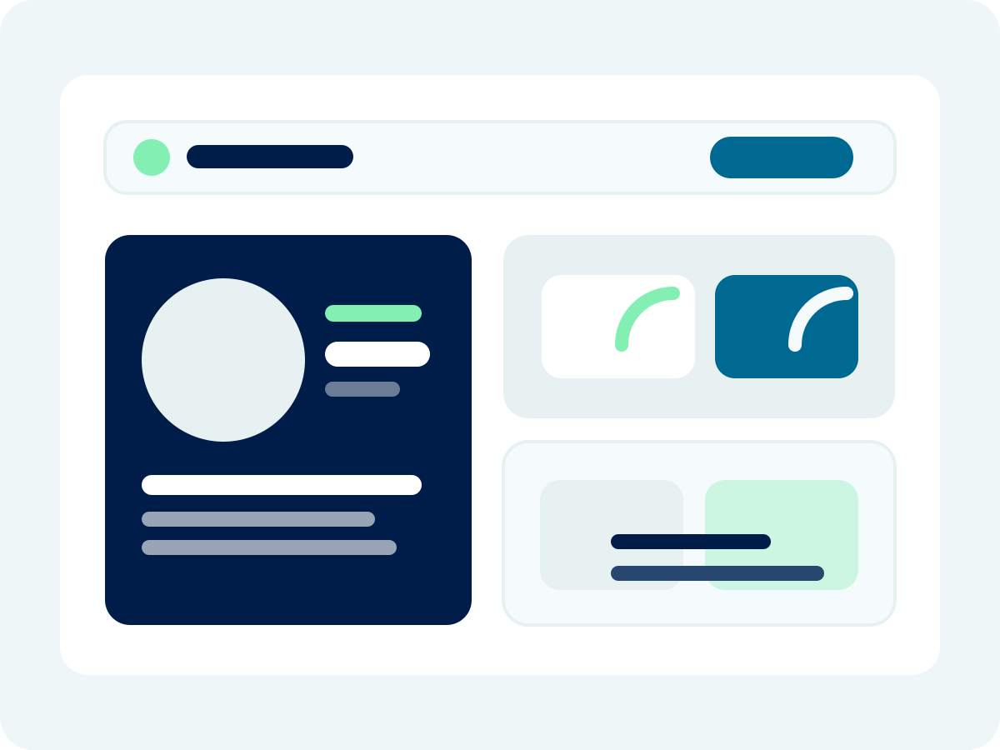

Case flow gets visible
Every active case has a place, a status, and a next step.
Embedded operations for high-stakes practices
We run the operational layer behind the practice so referrals, scheduling, reporting flow, and follow-up stop living in your head and start living in a system.
What changes first
Less chasing. More visibility. A practice that feels steadier within weeks, not someday.
Every active case has a place, a status, and a next step.
We build structure in tools like ClickUp so the practice stops running on memory.
Fewer status checks, fewer loose ends, and far fewer late-night follow-ups.

What It Should Feel Like
The goal is simple: referrals, reports, scheduling, and billing should stop feeling like separate fires.
The right systems make the work feel calmer before they make it feel bigger.
Brand Promise
Detailed work needs a steadier operational foundation. We build that foundation so the practice stops feeling like it is held together by vigilance alone.
"You should be able to trust your operations without constantly checking on them."
Who This Is For
Forensic psychologists, neuropsychologists, IME and fitness-for-duty evaluators, and multi-provider practices with high-volume, high-stakes workflows.
Support for referral coordination, scheduling, report workflows, and communication with third parties.
Operational structure for high-volume evaluations, detailed documentation, and smoother turnaround.
Systems that support tight timelines, organized communication, and professional follow-through.
Visibility and coordination across evaluators, cases, deadlines, billing status, and next steps.
What We Actually Do
We manage the admin layer so cases move, systems stay clear, and your team knows what needs attention next.
We coordinate the moving pieces from referral intake to final report so nothing gets buried or missed.
We build and manage structured systems so you can see what is pending, scheduled, late, or at risk.
We track reports, organize files, and handle follow-up so you are not relying on memory or scattered emails.
Clear visibility into active cases, billing status, and timelines so revenue is not dependent on recall.
Practice Operations Support
Our role is to create calm, consistency, and operational clarity across the work that usually turns into inbox hunting, status checking, and late-night catch-up.
The admin layer no longer depends on whoever happens to remember the next step.
Cases move through structured systems instead of ad hoc follow-up and scattered notes.
Your team can spot delays, pending items, and bottlenecks before they become bigger problems.
As provider count and case volume increase, operations stay stable instead of starting to break.

How We Work
We map the actual workflow and find where things are slipping.
We create the structure, tracking, and handoffs the practice needs.
We manage the work, adjust the system, and keep the details moving.
We look at how things actually run, not how they were supposed to run, and identify where the breakdowns live.
We build or refine tools like ClickUp so your workflows become trackable, structured, and scalable.
We plug into day-to-day operations, manage the work, and keep improving the system as your practice evolves.
Service Packages
Engagements are structured as monthly retainers based on complexity, volume, and number of providers supported.
Foundation
We get things organized and running consistently.
Embedded Operations
We function as your internal operations team without you having to hire one.
Advanced Multi-Provider Support
We help you scale without everything breaking.
Most engagements are scoped after consultation so the recommendation matches the actual workflow pressure, complexity, and support needs of the practice.
Operational Snapshot
Less inbox hunting. Fewer loose ends. A clearer view of what is active, late, pending, and next.
Why 9 to 5 Office
We are not stepping in to complete random tasks. We step in to create structure, protect workflow continuity, and give specialized practices a calmer, more reliable operational base.
We are built for practices managing legal timelines, detailed reports, complex documentation, and high-stakes communication.
We use structure, visibility, and process design to reduce bottlenecks instead of simply reacting to them.
You get consistent operational coverage and ongoing improvement, not sporadic hourly help.
We understand that sensitive practices require clear communication, reliability, and discretion.
Why Not In-House
In many practices, the real issue is not just a lack of hands. It is the absence of structure, workflow ownership, and systems that can support growth cleanly.
We step into messy operational environments quickly and create structure without a long ramp-up.
You are not just getting labor. You are getting workflow design, optimization, and ongoing management.
Support can scale with provider count, referral volume, and case complexity without redefining the whole role.
Practices gain operational maturity without first building and managing an internal operations department.
Testimonials
Forensic Assessment Services Team
The Forensic Assessment Services Team began working with 9 to 5 Office about six months after opening, right as demand started scaling faster than internal infrastructure could reasonably support. FAST described the result as traction, structure, and forward momentum at exactly the right inflection point.
"Because of them, we were able to surf the tidal wave of demand rather than drowning beneath it."
Their team highlighted the combination of systems thinking, responsiveness, and proactive workflow improvements, and said plainly that FAST would not be FAST without 9 to 5 Office.
Private Practice Testimonial
Megan Gable, PhD, a pediatric neuropsychologist in private practice, described her plate as full long before bringing in outside support. As the only evaluator in the practice while also supporting two additional providers and raising two young boys, she was having a hard time keeping up with everything.
"Work-life balance is a popular term these days, but Kristen and her team absolutely have given that to me."
She credited the team with creating real capacity for patient care, family time, community involvement, and research, while families independently noticed how kind and organized the practice felt.
Video Testimonial
Dr. Cohen speaks to the value of having structured, reliable operational support behind a complex evaluation practice.
Video Testimonial
Dr. Colman shares what it looks like to have operational support that reduces strain and creates more room for the real work.
Operational Visibility
Practices move from reactive status hunting to organized workflow management.
Admin Relief
Providers get more room for evaluations, documentation, and actual case work.
Scalable Structure
Operational maturity improves before demand turns into overwhelm.
"The work stops feeling scattered. Everyone knows what is active, what is pending, and what needs attention."
"Growth becomes something the practice can hold, not something it has to survive."
Case Studies
These engagements show what happens when growing practices stop relying on memory, inboxes, and ad hoc coordination and start running with structure.
Featured Case
A growing forensic practice brought us in when referrals were climbing faster than systems could support. We built structure around case flow, billing coordination, documentation handling, and evaluator onboarding so growth did not become operational drag.
Forensic Assessment Group
We helped a rapidly growing group build structure, billing coordination, documentation workflows, and evaluator onboarding systems so growth did not overwhelm the team.
Dual-Provider Neuropsychology Practice
We took over the administrative layer across scheduling, billing, and case coordination so the practice could focus on clinical and forensic work again.
Solo Pediatric Neuropsychologist
We stabilized operations, communication, and scheduling so the practice could stay organized while creating more room for patient care and outside opportunities.
FAQ
No. Our work is structured as monthly retainer support so we can take real ownership of operations and improve systems over time.
We work best with forensic psychologists, neuropsychologists, IME and fitness-for-duty evaluators, and multi-provider practices with meaningful case complexity.
We can build and manage structured workflows in tools like ClickUp and adapt to the systems your practice already uses where it makes sense.
Sometimes we function as the primary operations layer, and sometimes we support or strengthen an existing team. The right setup depends on your current structure and case volume.
Engagements are based on complexity, workflow demands, and number of providers supported. We scope recommendations after learning how your practice currently operates.
We begin with discovery and workflow review, then organize or refine the systems needed to support smooth day-to-day operations and consistent follow-through.
Confidentiality
We work with practices managing sensitive documentation, legal timelines, and high-stakes communication. That requires organized systems, careful follow-through, and respect for confidentiality in the way work is handled day to day.
Files, tasks, and communication are managed through defined workflows instead of informal workarounds.
Coordination with attorneys, agencies, vendors, families, and internal teams is handled with clarity and consistency.
We understand that evaluation-based practices require reliability, precision, and discretion.
The admin layer is supported by systems and ownership, not loose memory and scattered follow-up.
Contact
Tell us about your practice, your current workflow, and where operations feel heavier than they should.
Monthly retainer engagements tailored to complexity and case volume.
Next Step